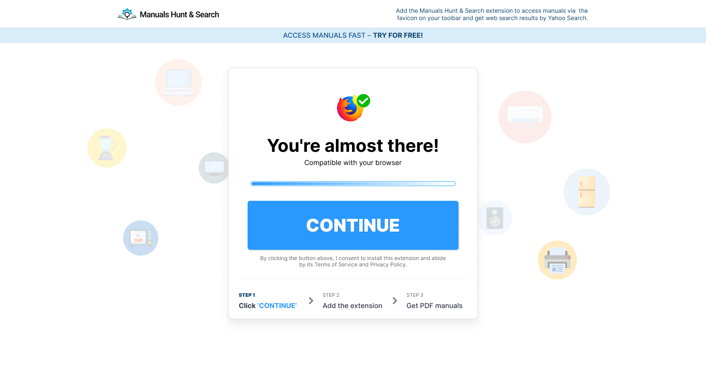
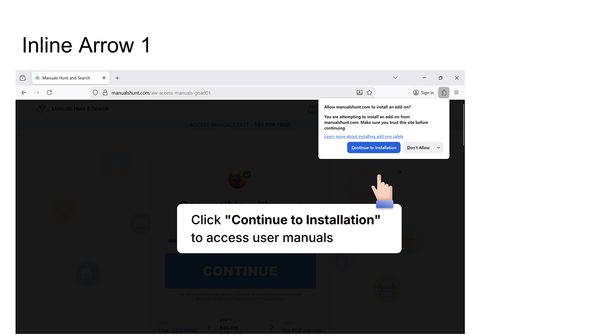
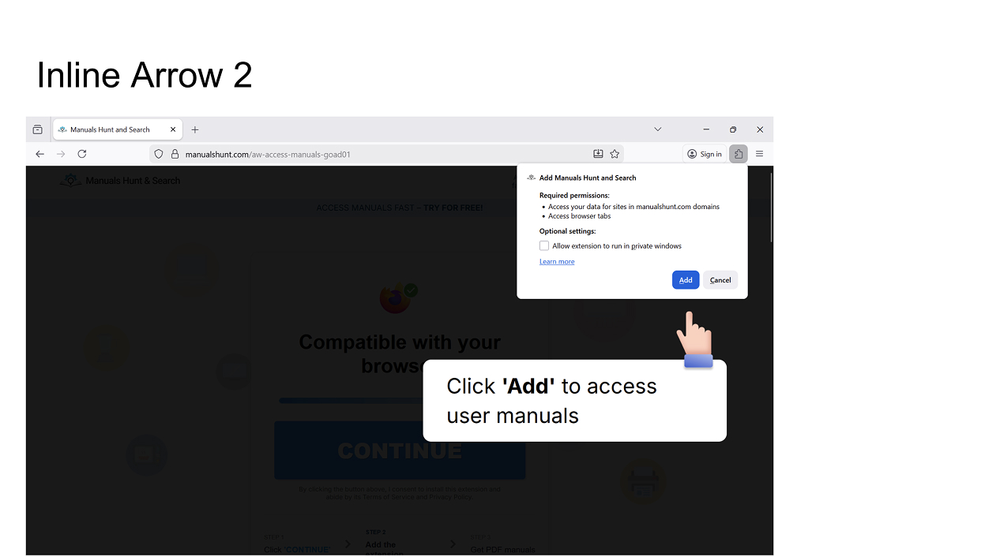
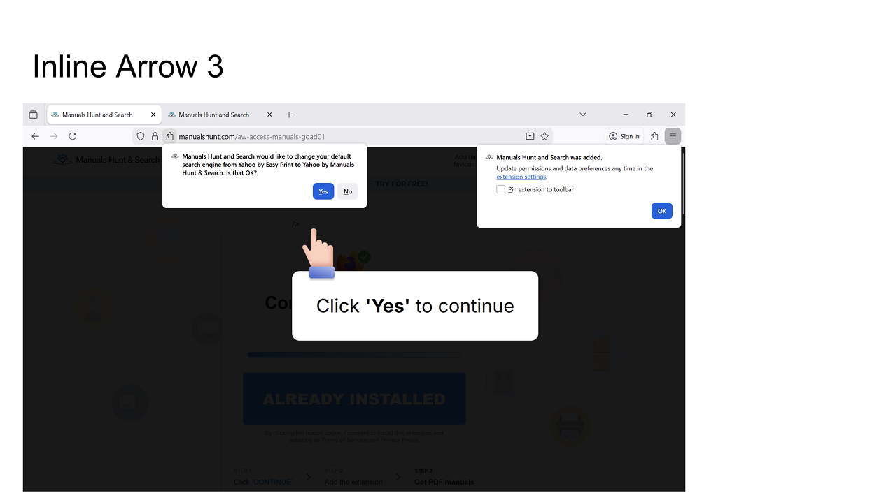
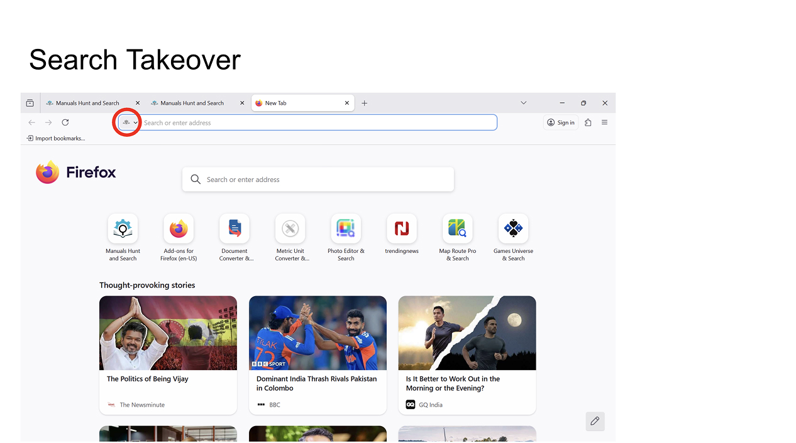
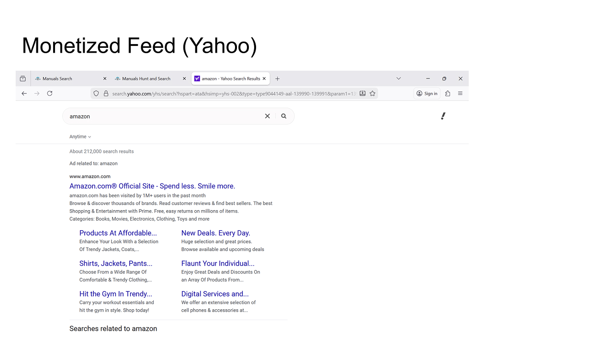

How often a landing-page visit becomes an installation start.
Media.net · Senior UX Designer
Atom Desktop Suite
I designed browser extension experiences that bring everyday tools into Chrome and Firefox. This case study follows the journey from discovering a utility to installing it and using it in the browser.
ROLESenior UX Designer
SUITE14 browser utilities
PLATFORMSChrome · Firefox
FOCUSAcquisition · Installation · Use
01 · Overview
Everyday utility inside the browser
Atom Desktop is a family of 14 single-purpose browser extensions. Each product addresses a practical task such as finding a manual, converting a unit, checking flight information, or planning a route.
The utility lives in the new-tab and search experience rather than a separate application. The suite shares an acquisition and installation framework, while each product keeps its own task, features, icon, color, and voice.
02 · Install journey
How do we explain the product promise, browser permissions, and search-setting change before a user commits?
01Ad
02Landing page
03Install CTA
04Browser prompts
05Installation
06Search-setting confirmation
Manuals Hunt & Search
The product promise stays above the fold
The landing page introduces the utility before the browser asks for a commitment. The primary task, the Continue button, and the three-step installation outline appear together so the user can understand what happens next.
The product page can explain the utility and set expectations. The permission dialogs themselves belong to the browser, so the design supports those steps without disguising who controls them.




The darkened page and instructional callouts provide context around native browser prompts. The user still chooses whether to continue, add the extension, or accept the search setting.
03 · Funnel evaluation
Measure each decision separately
How often a started installation reaches completion.
The complete acquisition journey from landing page to successful install.
04 · After installation
The utility becomes part of the browser
After installation, products can use the new-tab surface and partner-powered search. The exact combination varies by product.
The suite’s business model combines search syndication with new-tab content placements and discovery links to other Atom products.

New-tab surface
Useful entry points remain one click away
The documented Manuals Hunt example places the installed utility beside shortcuts to related products. A content feed creates an additional new-tab surface. These placements vary across the suite.
Partner search
Search syndication funds the free utility
Searches can route through a syndication partner such as Yahoo or Bing, depending on the product. Sponsored results follow the partner’s own labeling and ranking system. Revenue can come from redirected search activity, while the utility remains free to use.

05 · Product suite
One framework, 14 utilities
The suite reuses acquisition, installation, new-tab, and search patterns. The utility itself changes to match each task.
Manuals Hunt & Search
Manual search, an inline PDF viewer, and model or SKU lookup.
Metric Unit Converter
Quick conversion, right-click conversion, and recent conversion history.
Flight Details & Search
Flight status, delay information, gate lookup, and a new-tab flight widget.
Map Route Pro & Search
Directions, saved places, and traffic information.
Live product directory
Links were checked against the destinations documented in the source deck. A dash means that the deck does not provide that store listing.
| Product | Firefox | Chrome | Product page |
|---|---|---|---|
| Manuals Hunt & Search | Open ↗ | Open ↗ | Website ↗ |
| Map Route Pro & Search | Open ↗ | Open ↗ | Website ↗ |
| Metric Unit Converter | Open ↗ | Open ↗ | Website ↗ |
| Speed Test Meter & Search | Open ↗ | Open ↗ | — |
| Photo Editor & Search | Open ↗ | Open ↗ | Website ↗ |
| Document Converter | Open ↗ | Open ↗ | Website ↗ |
| Shipping Details & Search | Open ↗ | Open ↗ | Website ↗ |
| Trending News & Search | Open ↗ | Open ↗ | Website ↗ |
| Flight Details & Search | Open ↗ | Open ↗ | Website ↗ |
| Productivity Boost & Search | Open ↗ | Open ↗ | Website ↗ |
| Games Universe & Search | Open ↗ | Open ↗ | Website ↗ |
| Starbuzz News & Search | Open ↗ | Open ↗ | Website ↗ |
| Private Search Mode | — | Open ↗ | Website ↗ |
| Site Navigator | — | Open ↗ | Website ↗ |

06 · Featured product
Private Search Mode
Private Search Mode lets users switch search providers from the Chrome toolbar. Yahoo is used when Privacy Mode is off. When it’s on, users can choose Brave, Mojeek, DuckDuckGo, or Startpage.
The popup keeps mode status, provider choice, selection feedback, and product links in one compact toolbar surface.